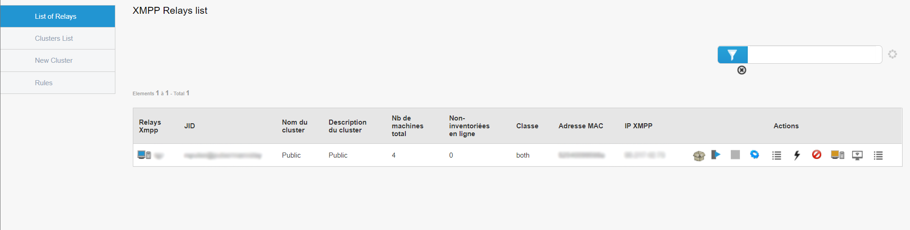
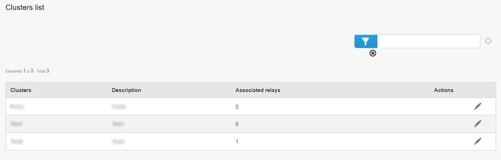
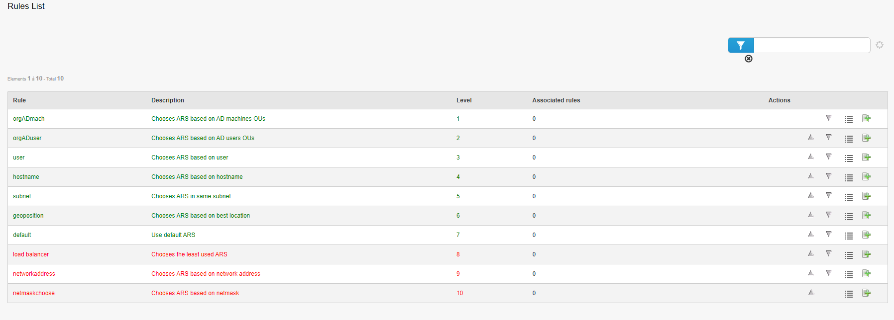

Admin¶
Cette section concerne la partie Admin de l’outil Pulse.
Le menu Admin regroupe les informations sur la liste des relais.

Lorsqu’on clique sur le menu Admin, on retrouve directement la liste de nos différents relais.
La page par défaut est “List of relays”, soit la liste des relais.
Liste des relais¶
Sur cette page, on peut retrouver toutes les infos des relais :
- le nom du relais,
- son JabberID,
- le nom du cluster dans lequel est contenu le relais,
- la description du cluster,
- le nombre de machines sur le relais,
- les machines non-inventoriées en ligne présentes sur le relais,
- sa classe,
- l’adresse MAC du relais,
- son adresse IP,
- les actions possibles à lancer sur le relais.
Concernant le dernier point, les différentes actions sont les suivantes :
Liste de packages : Affiche la liste des paquets présents sur le relais,
Reconfigurer les machines : Permet de lancer la Quick Action de reconfiguration des machine sur toutes les machines présentes sur le relais,
Switch : Permet d’éteindre le relais,
Editer les fichiers de configuration : Permet d’éditer les fichiers de configuration du relais,
QA lancées : Affiche la liste des Quick Actions lancées,
Actions : Permet de lancer une action sur le relais (Reboot, Process, Disk Usage…),
Bannir : Banni le relais. Celui-ci sera considéré comme hors-ligne,
Débannir : Débanni le relais. Il pourra à nouveau être utilisé,
Prise en main à distance : Permet de prendre en main à distance le relais au travers VNC, RDP ou SSH,
Règles des relais : Affiche la liste des règles sur le relais et permet également d’en ajouter.
Liste des clusters¶

La liste des clusters correspond à une liste de groupements de relais.
Un cluster peut donc contenir un ou plusieurs relais.
On peut par exemple faire un cluster de plusieurs relais afin de faire en sorte que les machines qui se connectent à ce cluster puissent choisir n’importe quel relais présent dans le cluster.
Cela permet notamment de désengorger un relais et d’avoir un load balancing sur les relais.
On peut modifier un cluster en cliquant sur le bouton approprié. Cela permet de changer le nom et/ou la description du cluster, ou encore d’ajouter et/ou retirer des relais au cluster.
Nouveau cluster¶
Cette page permet de créer un nouveau cluster.
Nous pouvons notamment y définir un nom, une description et d’ajouter des relais dans le cluster.
La modification de clusters se fait sur la page “Liste des clusters”, comme vu précédemment.
Règles¶

Cette page contient la liste des différentes règles pour les relais.
Ces règles permettent de déterminer sur quel relais la machine doit se connecter.
Chaque règle a son niveau, qui permet de donner l’ordre dans lequel les règles doivent être appliquées :
Par exemple, lors de l’attribution d’un relais à un poste, si au niveau 1 la règle est “hostname”, alors nous allons vérifier le hostname de la machine pour le lier au relais.
Si ça ne match pas, on passe au niveau 2 (par exemple “subnet”), qui quant à lui va vérifier le subnet de la machine pour la lier au bon relais.
Et ainsi de suite jusqu’à ce qu’une règle match. Si rien ne match, la machine utilisera le relais par défaut (la règle “default”).